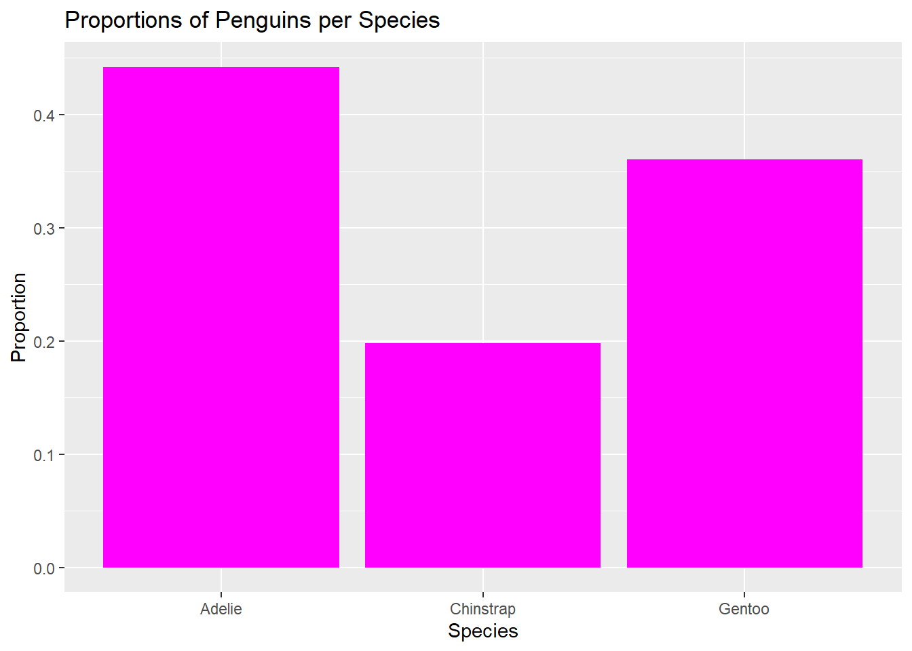
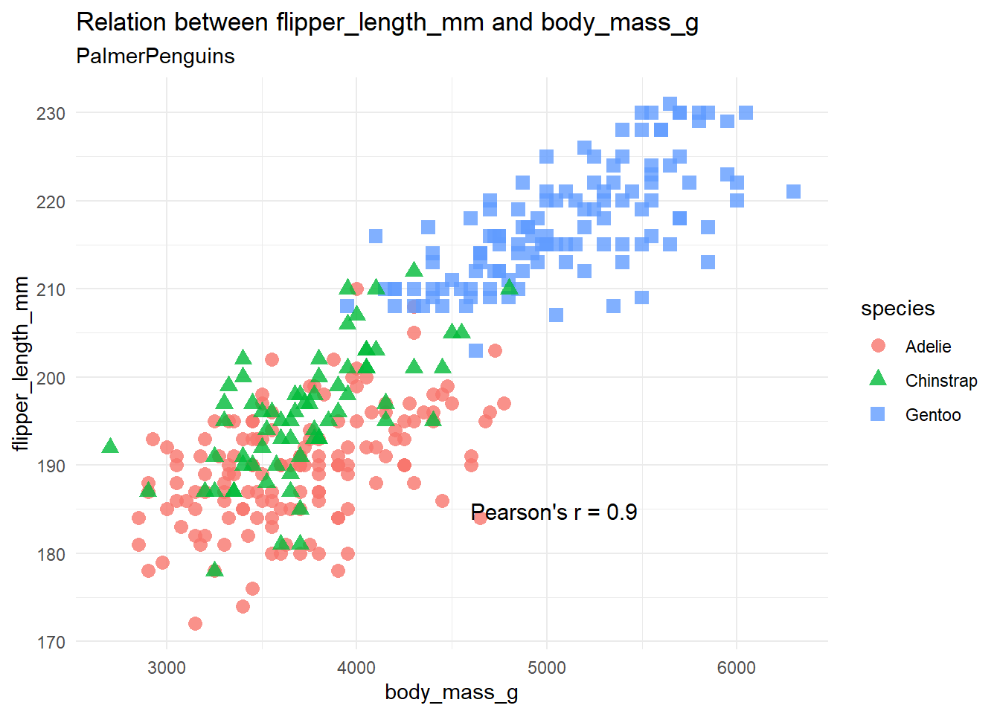
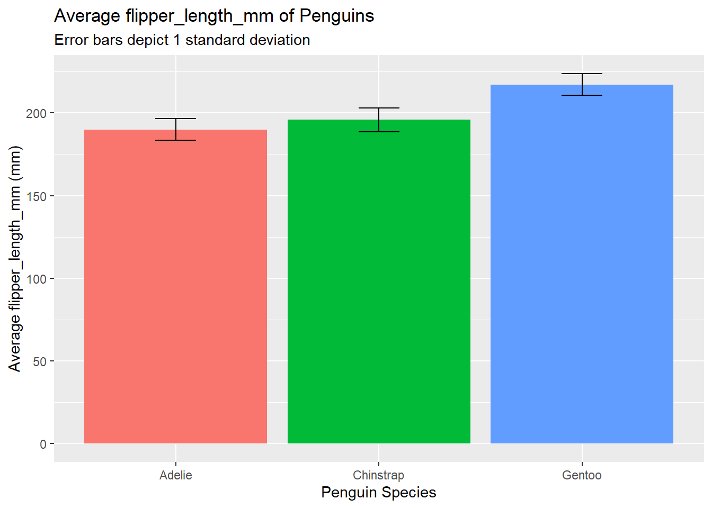
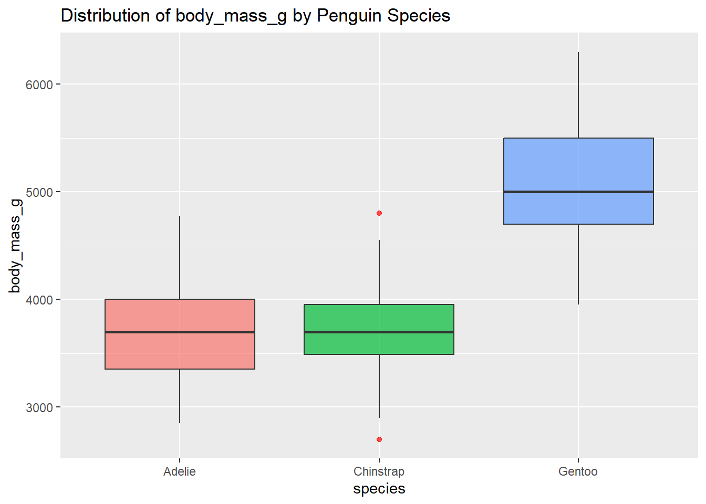

7 A new R package
7.1 Spotting penguins
De spottingpenguins package is gemaakt om de visualisatie van de dataset palmerpenguins te vergemakkelijken. Deze dataset bevat metingen van verschillende pinguïnsoorten. Er zijn verschillende visualisatiefuncties beschikbaar in het pakket, waaronder scatterplots, staafdiagrammen met standaardafwijking en boxplots. Om te beginnen moet je het spottingpenguins pakket installeren. Je kunt dit doen met het devtools pakket:
De vignette kan vervolgens bekeken worden met het volgende command:
Zodra de package geïnstalleerd is kan deze, samen met de benodigde dataset palmerpenguinsingeladen worden:
Barspecies visualiseert de pinguïn soorten in een bargraph met aantal (“counts”) of de proportie (“proportion”), met keuze voor kleur van de graph. Voor meer info: ?barspecies.
 Scatterpenguins genereert een scatterplot voor de gewenste pinguïnmetingen (bill length, bill depth, flipper length, or body mass) en toont de Pearson correlatiecoëfficiënt in het plot. Voor meer info ?scatterpenguins.
 Penguin_avg_bar genereert een staafdiagram met het gemiddelde van een bepaalde pinguïnmeting voor elke soort, met errorbars. Voor meer info ?penguin_avg_bar.
 Penguin_measurement_boxplot genereert een boxplot met de verdeling van een bepaalde pinguïnmeting voor elke soort. Met als rode punt de outliers. Voor meer info ?penguin_measurement_boxplot
